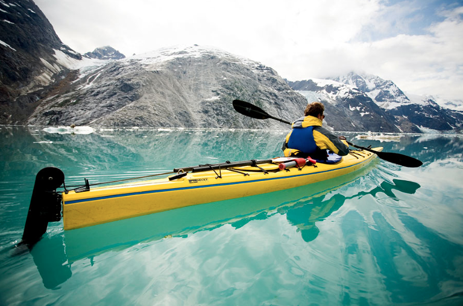

Каякинг
Каякинг – это вид экстремального спорта, который появился относительно недавно. Он представляет собой сплав по бурной реке на одноместном судне, который и называется каяком. Чаще судно рассчитано на одно место, но может быть и двухместным.
Каяк – это гребная лодка, история которой связана с широким распространением у алеутов, эскимосов и других арктических народов. Каяк традиционно изготавливали из шкур, натягивая их на деревянный или костяной каркас. Современные каяки промышленного производства изготавливаются из материалов повышенной прочности (полиэтилен, стекловолокно, карбон).

Каякинг можно разделить на 2 основные группы: Морской каякинг - это путешествия по озерам, морям, океанам, равнинным рекам и водохранилищам. Морской туристический каякинг – это сплав по относительно водной глади. Каякинг на бурной воде – это движение в бурном потоке воды.
Каяки и делятся на несколько разновидностей. Различают слаломные, игровые, сплавные лодки и лодки типа родео.